How it works
One server runs
the whole company.
Overmind is a control plane, not a launcher. A single Rust server (axum + SQLite) holds the org chart, the budgets, the audit chain, and the memory contract. You manage work; the server enforces the rules.

Four steps, every task
The same loop runs whether one agent works alone or a dozen run in parallel.
Recall — nobody starts cold
Before touching code, an agent calls get_context and recall against the organization's brain over MCP. Past decisions, patterns, and fixes load into the run — so work builds on what the company already knows instead of re-deriving it.
Checkout — claim and budget, atomically
To start, the agent claims the task through a server-enforced gate. The spend check and the claim commit in a single transaction: an agent can never over-claim its budget or grab a task another agent is already running. The budget is truth, not a hint.
Work — isolated in its own worktree
Each run executes in an isolated git worktree on its own branch. Parallel agents never collide on a working tree; every change is contained, reviewable, and — where autonomy demands it — held at an approval gate until you sign off.
Record — sealed into the chain, remembered in the brain
Every state change is written as an append-only, SHA-256 hash-chained audit event, committed with the change it records. What the agent learned goes back to Wadachi via store_memory / store_decision — so the next run starts one step ahead.
Provenance you can verify
Everyone runs agents. Overmind can prove what every agent did — history is tamper-evident, not just logged. Each block seals the one before it; break any link and the verifier names it.

MemoryProvider contract spoken over MCP. Point it at Wadachi and the org gains a brain; leave it unset and Overmind runs identically, memoryless. No provider is ever a hard dependency.